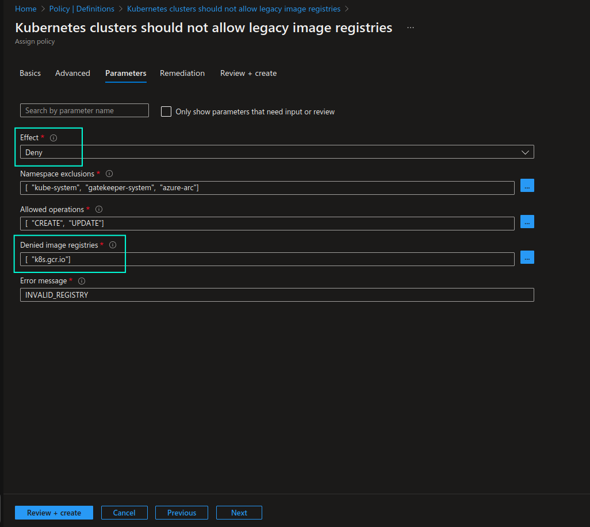

Creating Custom Azure Policy for Kubernetes to Disallow Non-Compliant Image Registries
There are cases where you may need to explicitly ensure that specific container image registries are blacklisted from being used in your Kubernetes clusters. Let me provide you with a very recent and relevant example.
From 3rd April 2023, k8s.gcr.io legacy image registry is officially frozen which means that no images, future Kubernetes versions and patch releases for earlier Kubernetes versions will be pushed to this registry. At some point in the near future this legacy image registry will be completely deactivated.
registry.k8s.io image registry is an official replacement for k8s.gcr.io, and you must ensure that you don’t have any dependencies on the legacy image registry as soon as possible.
The journey of transitioning to the new registry started back in 2022, when registry.k8s.io reached GA. There were multiple reasons for this change, but the most important reason is that the new image registry acts as a form of Content Delivery Network (CDN), spreading the load across regions, which will allow more cloud providers and vendors provide better experience to their image consumers by hosting their images “closer to home”.
Lower egress bandwidth && cost -> Higher download speed -> Better user experience. A win-win change. ✅
You can read the full announcement here: k8s.gcr.io Image Registry Will Be Frozen From the 3rd of April 2023
This is an example of where blacklisting an image registry could come in handy and policies are here to help automate and alert upon that!😺 In order to prevent k8s.gcr.io based images from running in your cluster, you can implement policies, for example with Gatekeeper. Policies for Gatekeeper and Kyverno are available at AWS EKS Best Practices repo.
But how would you implement the same validation for AKS/Azure Arc-enabled Kubernetes clusters with Azure Policy?
There are multiple options you may consider:
- Assign
Kubernetes cluster containers should only use allowed imagesbuilt-in policy definition (/providers/Microsoft.Authorization/policyDefinitions/febd0533-8e55-448f-b837-bd0e06f16469) and explicitly whitelist image registries that you allow Kubernetes cluster workloads to use. If you’ve already assigned this policy definition you need to ensure thatk8s.gcr.ioimage registry is no longer included.
From what I could see, above built-in policy definition only evaluates Pod containers/initContainers/ephemeralContainers. If you want to evaluate CronJob and Workload containers/initContainers/ephemeralContainers, as it’s done in the custom policy below, you will either need to create a custom Azure Policy based on the above built-in policy definition or go ahead with the below alternative #2.
- Create custom Azure Policy that can be used for blacklisting non-compliant/deprecated image registries.
k8s.gcr.ioimage registry can be added to the list. Then, Kubernetes cluster workloads that are attempting to use this image registry (or other blacklisted registries for that matter) will be denied deployment.
Let’s look into the latter alternative in more detail. I’ve taken templates for Gatekeeper that are available in AWS EKS Best Practices repo and modified them further in order to create a custom Azure Policy that will either audit or deny deployment of workloads (Pod/CronJob/Workload containers, initContainers and ephemeralContainers) that are dependent on the blacklisted image registries.
I will not go into the details of what a custom Azure Policy is but you can check out my earlier blog post to learn more: Keeping AKS Clusters Continuously Secure With Azure Policy. I will soon publish another blog post that will go more in-depth on writing custom Azure Policy definitions for Kubernetes with Rego and Gatekeeper templates so stay tuned for more information on the topic!😼
Custom Azure Policy source files are available in my GitHub repo: guidemetothemoon/div-dev-resources. There are two files that are related to the respective custom Azure Policy:
-
k8s_azure_disallowed_registry_ct.yamlrepresents a ConstraintTemplate that will be used by Gatekeeper to audit and flag non-compliant resources; -
k8s_azure_disallowed_registry_policy.jsonrepresents the implementation of the custom Azure Policy definition. It points tok8s_azure_deprecated_registry_ct.yamlin theurlparameter ofpolicyRulesection. Please note that ConstraintTemplate file must be publicly available for the Azure Policy to be able to use it.
With minor to none modifications you can paste content of k8s_azure_disallowed_registry_policy.json directly in Azure portal custom Azure policy creation view or in Terraform azurerm_policy_definition resource.
Once you’ve created the custom Azure Policy definition and assigned it to the scope of your choosing, you can test it by assigning the policy with Deny effect and attempting to run a Pod that attempts to use a container image from disallowed image registry. Pod will be denied, as shown in the screenshot below:


For more information about Azure Policy, please see here:
That’s it from me this time, thanks for checking in!💖
If this article was helpful, I’d love to hear about it! You can reach out to me on LinkedIn, Twitter, GitHub or by using the contact form on this page.😺
Stay secure, stay safe.
Till we connect again!😻